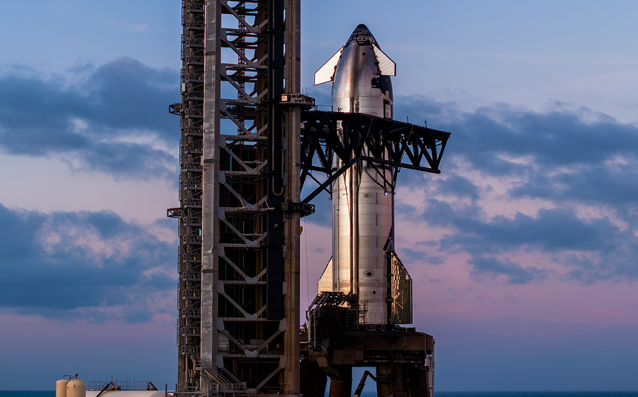
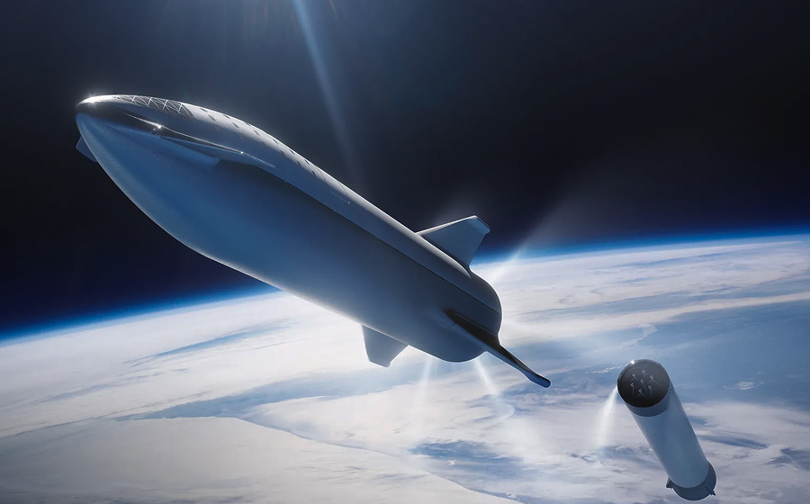
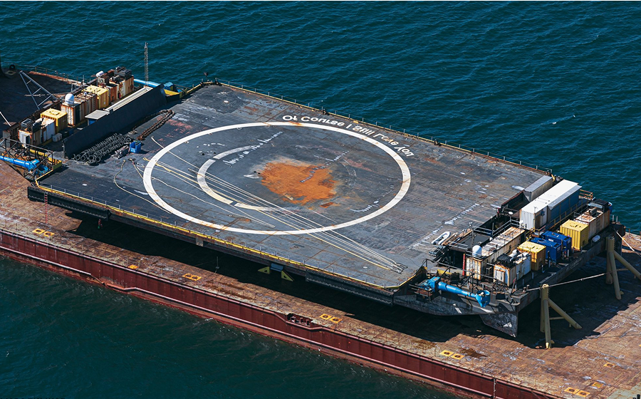
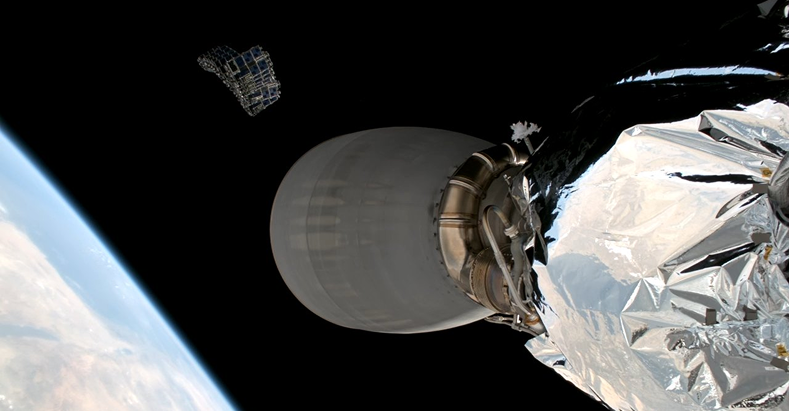
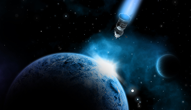
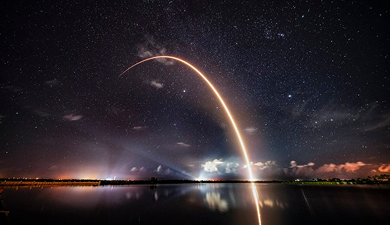
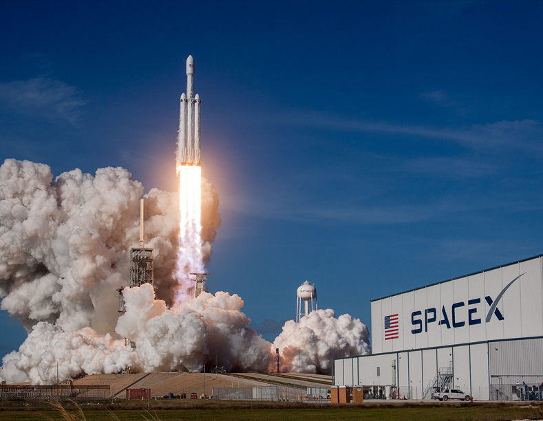

innovation
Engineering the Future of Spaceflight
-

- Starship
- Starship is a fully reusable next-generation spacecraft designed for the Moon, Mars, and beyond. With immense payload capacity and reusability, it represents the future of long-duration human missions.
-

- Reusability
- Falcon 9 is a reusable, two-stage rocket that returns safely after launch. By reusing the most expensive parts, SpaceX dramatically lowers the cost of access to space and increases the pace of exploration.
-

- Precision_Landings
- Falcon boosters can land with pinpoint accuracy on autonomous drone ships at sea. This reliability proves that rockets can be reused consistently and safely, even in challenging environments.
THE JOURNEY TO BEYOND EARTH
- 
- 
- 
-
Making Space Accessible
Lowering the cost of space travel has always been central to SpaceX’s mission. By reusing rockets and streamlining manufacturing, the company has made access to space more affordable than ever. What was once possible only for governments is now within reach for startups, universities, and smaller nations, opening new opportunities for science, communication, and innovation on a global scale.
As costs fall, launch becomes something teams can plan around—not a one-off event, but a repeatable part of product development. Standardized hardware, predictable schedules, and rideshare options let small payloads fly alongside larger missions, shrinking lead times from years to months. This reliability encourages iteration: teams can test, learn, and relaunch, turning bold ideas—earth observation, climate monitoring, disaster response, IoT connectivity—into working services in orbit, while reusability reduces waste and shifts budgets toward payloads and operations where they create more value. In short, accessibility turns launch from a rare spectacle into reliable infrastructure.
Affordability also demands responsibility. Lower barriers must be paired with careful spectrum coordination, debris mitigation, and end-of-life planning so that a more crowded orbit remains sustainable. Reusability, on-orbit servicing, and refueling are the next multipliers: they extend spacecraft lifetimes, unlock in-space manufacturing, and lay the logistics for sustained lunar operations. In effect, cheaper, reliable launch doesn’t just put more satellites in the sky—it turns space into dependable infrastructure that empowers science, commerce, education, and humanitarian work at global scale.
-
Shaping Humanity’s Future
The innovations pioneered by SpaceX do more than revolutionize technology—they redefine humanity’s future. Each successful mission demonstrates that sustainable and affordable access to space is no longer a dream but a reality. These breakthroughs expand opportunities for research, commerce, and exploration while inspiring the next generation of scientists and dreamers.
Ultimately, the impact of today’s innovations will be measured not just in launches, but in humanity’s ability to thrive beyond our home planet. As launch cadence increases and on-orbit infrastructure matures, the practical foundations for long-duration missions, in-space manufacturing, and planetary logistics begin to take shape. Lower barriers invite broader participation—from schools and small nations to humanitarian organizations—turning space into a collaborative platform for solving problems at a global scale.
Most importantly, the human story expands. Lower barriers invite students, researchers, and emerging space nations to contribute—not as spectators, but as builders. A safety-first, test-learn-iterate culture develops a new workforce fluent in both engineering discipline and bold imagination. If we sustain that blend of ambition and responsibility, the measure of success won’t be the number of rockets launched, but the breadth of lives improved—and the permanence of humanity’s foothold beyond Earth. - 